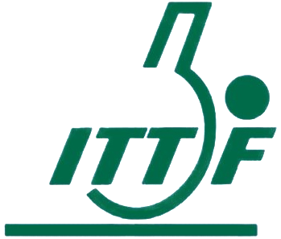

Pour les plaques, c'est un peu plus complexe.
Ces dernières s'acchètent en forme de carré, qu'il faut ensuite coller sur le bois puis redécouper à la forme voulue (sauf si la raquette est achetée prémontée).
Toutes les plaques autorisées en compétitions sont marquées d'un logo ITTF (International Tablle Tennis federation ou Fédération internationtale de tennis de table), symbolisé par ce logo :

Chaque plaque de raquette possède ce logo proche du manche, à l'endroit ou sont généralement placés les doigts, permettant de garantir la certification de la plaque.
Cela permet à tous joueur d'affronter des personnes dont le matériel est similaire au leur.
De plus, il existe 3 grands types de plaques au tennis de table :
Un backside est une plaque qui est capable de mettre de l'effet à la balle.
C'est la plaque la plus utilisée au tennis de table, car la seul permettant d'attaquer avec de l'effet.
Il existe 2 grands types de Backside : les plaques européennes et les plaques chinoises.
Ces dernières peuvent toutes les deux mettre de l'effet, mais possède des caractéristiques différentes.
Les plaques européennes accrochent la balle, ce qui la fera rouler sur la raquette en cas de mise d'effet, alors que les plaques chinoises collent, ce qui fera rouler la balle uniquement si le joueur tente de mettre de l'effet (annulation de l'effet adverse).
La totalité des joueurs (mis à part certains résistantants), utilisent un backside, car il est le meilleur moyen d'attaquer et de se créer une balle plus facile à jouer pour terminer le point.
Le picot est une plaque principalement utilisé par les joueurs défensifs, car elle permet de ne pas prendre les effets.
Les joueurs défensifs remettent donc la balle avec la quasi totalté de l'effet mis par le joueurs assayant, ce qui le laissera avec 2 options : attaquer a nouveau la balle, en frottant la balle au moins aussi vite que la première fois, soit remettre la balle sans attaquer et risquer de se prendre un contre.
Les picots sont aussi utilisés par les joueurs ayant des points faibles en coup droit/revers afin de pallier ce désavantage en match.

Les antitops sont un type de plaque similaire au back side, mais beaucoup plus lent et surtout, elles n'accrochent pas ni ne collent.
Dût à l'absence de mousse sous le caoutchouc, le bruit produit lors de l'impact est très sec, similaire à celui du balle cassée.
Ces plaques permettent de frapper les balles malgré les effets, mais uniquement proche de la table car sinon, elle ne passeront pas le filet du au manque de puissance.